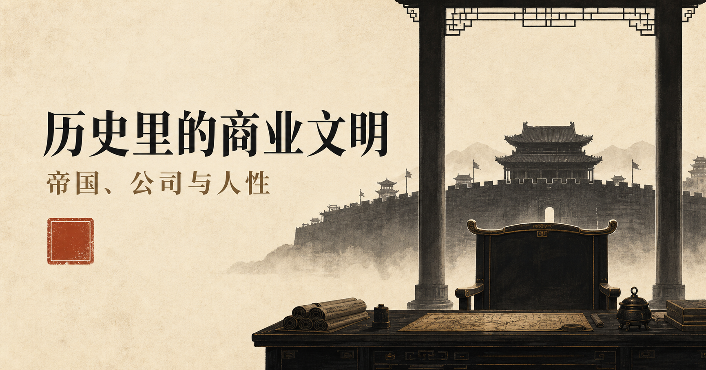

帝国创业史
把王朝放回创业、扩张、财政、边疆与接班的完整周期。
HISTORY · COMMERCE · POWER
让企业家在历史里看见自己，让普通读者在故事里看懂商业文明。

01 / 项目宣言
它能留下的，是人在具体位置上做出的选择，以及每一种选择后来付出的代价。
这个项目不把帝国写成公司，不把皇帝写成CEO。我们只在两种组织之间保留一道可供观察的缝隙：权力如何授权，功劳如何重新定价，制度如何经过执行层，胜利之后又如何安放曾经不可替代的人。
02 / 五条主线
把王朝放回创业、扩张、财政、边疆与接班的完整周期。
创始人与功臣之间，授权怎样变成猜忌，战功怎样变成风险。
聪明人如何进入权力，又为何常在方案成功后失去位置。
明规则背后的执行层、灰色成本、关系网络与制度阴影。
不从赢家总结经验，而从失败者身上观察结构如何收紧。
03 / 首批10篇
当创业阶段结束，组织怎样处理功臣、顾问、财政与退出。
韩信
强势高管与组织边界
已完成样稿商鞅
改革授权与个人安全
大纲完成汉武帝
增长、现金流与扩张边界
大纲完成桑弘羊
财政系统与专业官僚
资料中主父偃
快速晋升与政治负债
资料中李斯
接班安排与短期保位
待核验晁错
替罪机制与授权撤回
待核验王莽
制度理想与迁移成本
待核验曹操
供应链与组织韧性
待核验王安石
KPI、执行与用户体验
待核验04 / 首篇样稿
老板与将军
人物 01 · 韩信
一个组织如何得到不可替代的人，又如何摆脱他
“公司终于走到了今天，第一件重要的事却是证明：以后不能没有他。”
天下未定时，韩信的独立统兵能力是汉集团最稀缺的资产；天下已定后，同一种能力、声望与封国却构成新帝国必须处理的不确定性。问题不是一个人突然改变，而是岗位的含义变了。
主要依据《史记·淮阴侯列传》《高祖本纪》与《汉书·韩彭英卢吴传》。对陈豨案保留史料边界。
05 / 内容生产系统
AI负责整理、扩展与转制；人负责史料判断、叙事伦理与最后的观点。
人物、冲突、组织关系、命运转折与商业镜像必须同时成立。
先读正史本传、本纪和年表，再用制度史与专题研究互证。
现代困境进入，历史现场推进，价值反转，最后留下余味。
事实审、结构审、语言审；争议处降格表达，不用演义补空白。
一篇长文拆成音频、短视频、图文卡片和讨论题，再回写复盘。